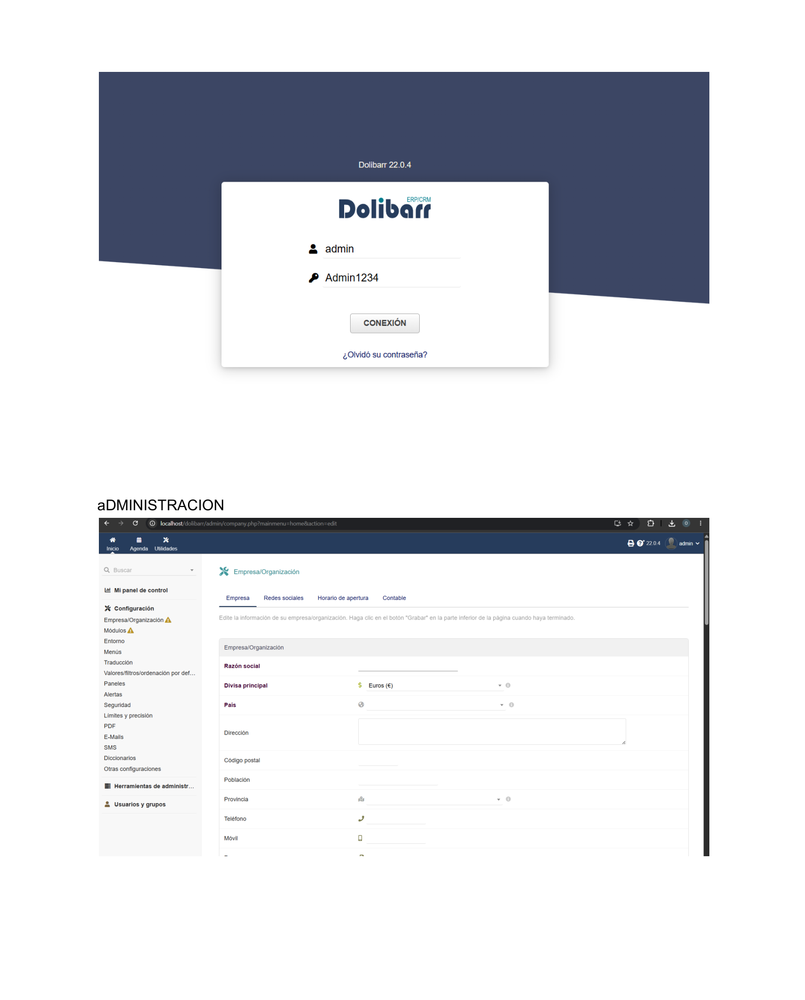
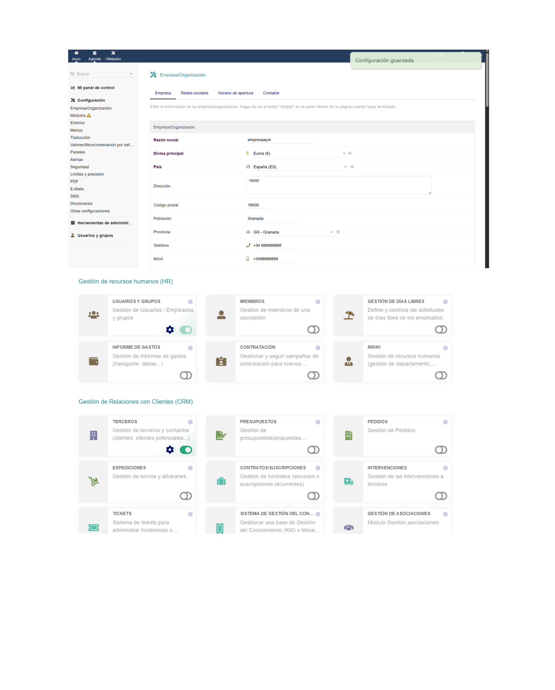

Primeros pasos tras la instalación: acceso, empresa y módulos en Dolibarr
Una vez instalado, abrimos el navegador y accedemos a http://localhost/dolibarr. La pantalla de login de Dolibarr pide el usuario y la contraseña que definimos durante la instalación:
adminTras iniciar sesión, Dolibarr nos lleva directamente al panel de configuración de la empresa/organización, donde hay que rellenar los datos básicos antes de empezar a usar el sistema.

En Configuración → Empresa/Organización introducimos todos los datos de la empresa que aparecerán en los documentos generados (facturas, presupuestos, albaranes...):
Una vez rellenados los campos, pulsamos Grabar y el sistema confirma "Configuración guardada". A continuación se ve la página de módulos disponibles, organizada por categorías: Gestión de RRHH (usuarios, días libres, nóminas...) y CRM (terceros, presupuestos, pedidos, expediciones...).

Dolibarr funciona por módulos que se activan o desactivan con un interruptor. Solo se habilitan los que la empresa necesita. Las categorías principales son:
| Categoría | Módulos destacados |
|---|---|
| Gestión de RRHH | Usuarios y grupos, Días libres, Informe de gastos, Contratación, RRHH |
| CRM (clientes) | Terceros, Presupuestos, Pedidos, Expediciones, Contratos, Tickets |
| VRM (proveedores) | Proveedores, Presupuestos de proveedor, Recepciones, Incoterms |
| Financiero | Facturación, Contabilidad, Bancos/Cajas |
| Inventario | Productos, Almacenes, Movimientos de stock |
Acceder a localhost/dolibarr con las credenciales creadas en la instalación.
Rellenar razón social, divisa, país, dirección y teléfonos en Configuración → Empresa.
Ir a Configuración → Módulos y activar solo los que se vayan a usar.
Desde Herramientas de administración → Usuarios y grupos → Nuevo usuario.
Acceder a la configuración específica de cada módulo activo para ajustar opciones.